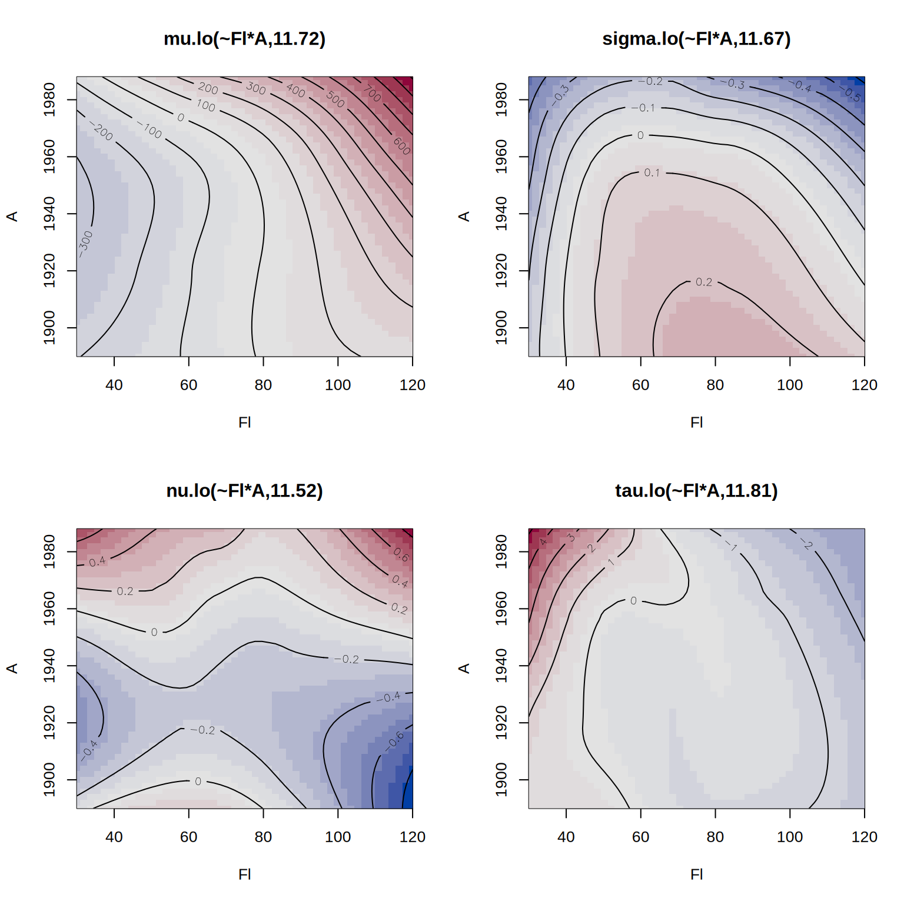

lo <- function(formula, ...)
{
## ensure it's a formula
if(!inherits(formula, "formula")) {
formula <- as.character(substitute(formula))
formula <- as.formula(paste("~", formula))
environment(formula) <- sys.frame(-1)
}
## list for setting up the special model term
st <- list()
## control arguments
st$control <- list(...)
## variables, label and data
st$term <- all.vars(formula)
st$label <- paste0("lo(", paste0(gsub(" ", "",
as.character(formula)), collapse = ""), ")")
st$data <- model.frame(formula)
## per default scale the data
if(is.null(st$control$scale))
st$control$scale <- TRUE
if(isTRUE(st$control$scale)) {
sx <- list()
for(j in colnames(st$data)) {
sx[[j]] <- c("mean" = mean(st$data[[j]]), "sd" = sd(st$data[[j]]))
st$data[[j]] <- (st$data[[j]] - sx[[j]]["mean"]) / sx[[j]]["sd"]
}
st$scalex <- sx
}
## New model formula used for fitting.
st$formula <- update(formula, response_z ~ .)
## Assign the "special" class and the new class "n".
class(st) <- c("special", "lo")
return(st)
}Special Model Terms
Special model terms in gamlss2 can be virtually any kind of model specification. For example, gamlss2 supports all smooth terms from the mgcv package, including s(), te(), and others. Another example is the la() constructor, which provides Lasso-penalized model terms.
Defining new special model terms in gamlss2 is relatively straightforward. To implement a new model term, the following three functions need to be provided:
- a constructor function to define the term,
- a fitting function to estimate the term from data, and
- a prediction function for use in model evaluation or forecasting.
As a demonstration, we show how to incorporate local polynomial regression () via loess() (Cleveland, Grosse, and Shyu 1993). Since loess() supports a weights argument, it integrates naturally into the gamlss2 framework, like many other fitting functions that accept weights.
1 The special model term constructor
Any special model term constructor must be registered in the fake_formula() function, which is called internally by gamlss2(). If a constructor is not yet registered, the user can either:
- provide the new special term name via the
specialsargument offake_formula(), or - use the reserved constructor name
"user", which is already recognized byfake_formula().
To implement a local polynomial smoothing term via loess(), we define a new constructor function called lo() (registered in fake_formula()). This function can accept all relevant arguments from both loess() and loess.control(), which are passed on to the fitting function.
Note that the data to be used in model fitting is evaluated directly within the constructor function and is scaled per default. The returned list must contain all relevant information required for both estimation and prediction. The return value must be of class "special" and "lo" in this case.
2 The fitting function
For estimation within gamlss2(), the generic special_fit() function is used. To support the loess model term, a method special_fit.lo() must be provided.
The fitting function takes the list x of class "lo" (as returned by the constructor lo()), the current working response z, the current working weights w, and a list of control parameters (which are passed through the dots argument in the gamlss2() call). Estimation is carried out via loess(), where z and w are inserted into the data stored in the x
special_fit.lo <- function(x, z, w, control, ...)
{
## assign current working response and weights
x$data$response_z <- z
x$data$weights_w <- w
## set up loess call
call <- "loess(formula = x$formula, data = x$data, weights = weights_w"
## add optional control parameters
if(!is.null(x$control)) {
for(j in names(x$control))
call <- paste0(call, ", ", j, "= x$control$", j)
}
call <- paste0(call, ")")
## estimate model
rval <- list("model" = eval(parse(text = call)))
## get the fitted.values
rval$fitted.values <- fitted(rval$model)
## center fitted values
rval$shift <- mean(rval$fitted.values)
rval$fitted.values <- rval$fitted.values - rval$shift
## degrees of freedom
rval$edf <- rval$model$trace.hat
## pass scaling
rval$scalex <- x$scalex
## assign class for predict method
class(rval) <- "lo.fitted"
return(rval)
}The returned object must be a list containing a "model" element that holds the fitted loess() object. Additionally:
"fitted.values"must contain the centered fitted values to ensure identifiability in the backfitting algorithm,"edf"must specify the effective degrees of freedom used in the smoother, and- the returned object must be of class
"lo.fitted"so thatspecial_predict()can dispatch the appropriate prediction method.
This setup integrates seamlessly with the iterative estimation algorithm implemented in RS().
3 The predict function
The prediction function defines how fitted values are obtained from a model term of class "lo.fitted". This method is called by special_predict() during model evaluation and prediction.
special_predict.lo.fitted <- function(x, data, se.fit = FALSE, ...)
{
## scaling
if(!is.null(x$scalex)) {
for(j in names(x$scalex)) {
data[[j]] <- (data[[j]] - x$scalex[[j]]["mean"]) / x$scalex[[j]]["sd"]
}
}
## compute predicted values from the loess model
p <- as.numeric(predict(x$model, newdata = data))
## apply centering shift
p <- p - x$shift
## wrap in a data frame if se.fit = TRUE,
## mandatory
if(se.fit)
p <- data.frame("fit" = p)
return(p)
}This function must return a numeric vector (or data frame if se.fit = TRUE) containing the predicted values for the given data. The shift value, computed during model fitting, is subtracted to maintain identifiability of the additive predictor.
The argument se.fit is included for compatibility and can be extended in the future to return standard errors.
4 Example: Munich rent data
We use the rent dataset from the gamlss.data package to demonstrate the use of custom model terms based on local polynomial smoothing via loess().
## load the Munich rent data
data("rent", package = "gamlss.data")We first estimate a model using the custom lo() constructor for univariate smoothers on floor size (Fl) and year of construction (A).
## define model formula with univariate smoothers
f1 <- R ~ lo(~Fl) + lo(~A) + loc + B + H + L | . | . | .
## estimate the model using the BCT distribution
b1 <- gamlss2(f1, data = rent, family = BCT)GAMLSS-RS iteration 1: Global Deviance = 27540.9342 eps = 0.294281
GAMLSS-RS iteration 2: Global Deviance = 27540.5289 eps = 0.000014
GAMLSS-RS iteration 3: Global Deviance = 27540.4917 eps = 0.000001 Next, we include a bivariate loess smoother for Fl and A to allow for interaction.
## define model formula with bivariate smoother
f2 <- R ~ lo(~Fl*A) + loc + B + H + L | . | . | .
## estimate the alternative model
b2 <- gamlss2(f2, data = rent, family = BCT)GAMLSS-RS iteration 1: Global Deviance = 27518.5207 eps = 0.294855
GAMLSS-RS iteration 2: Global Deviance = 27517.9609 eps = 0.000020
GAMLSS-RS iteration 3: Global Deviance = 27517.7721 eps = 0.000006 We can compare the models using the AIC().
AIC(b1, b2) AIC df
b2 27659.21 70.71669
b1 27670.58 65.04604Finally, we visualize the estimated effects from the second model.
par(mfrow = c(2, 2))
plot(b2, spar = FALSE)
This example illustrates how easy it is to integrate loess smoothers into gamlss2 using the custom model term interface.
References
Cleveland, W. S., E. Grosse, and M. Shyu. 1993. “Local Regression Models.” In Statistical Modelling in s, edited by J. M Chambers and T. J Hastie, 309–76. Chapman & Hall: New York. https://www.taylorfrancis.com/chapters/edit/10.1201/9780203738535-2/statistical-models-john-chambers-trevor-hastie.
Rigby, R. A., and D. M. Stasinopoulos. 2005. “Generalized Additive Models for Location, Scale and Shape.” Journal of the Royal Statistical Society C 54 (3): 507–54. https://doi.org/10.1111/j.1467-9876.2005.00510.x.